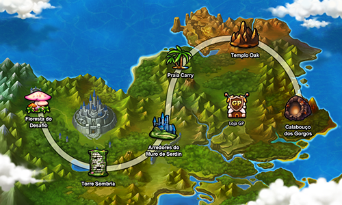
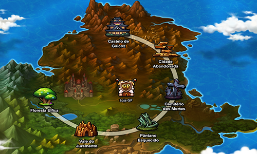
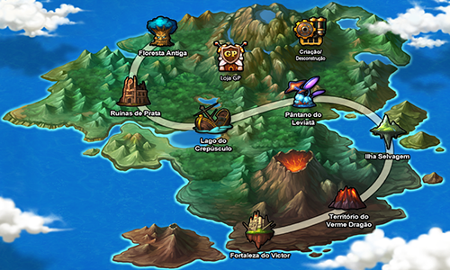
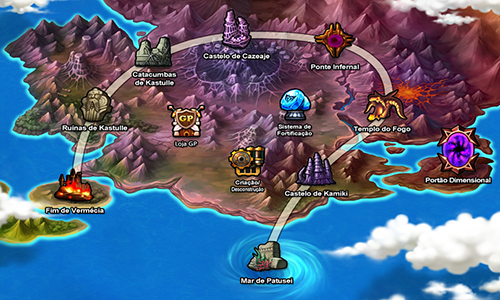
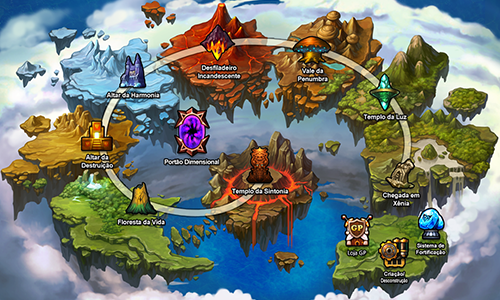
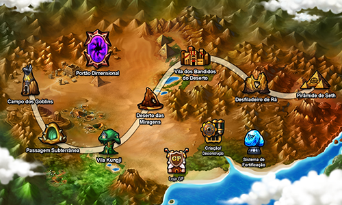
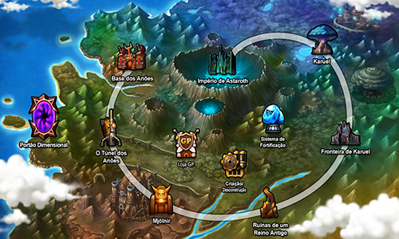
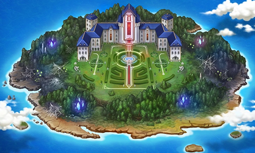
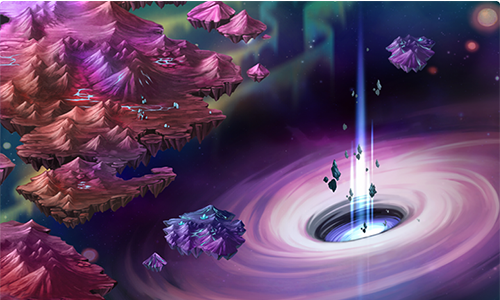

|
Serdin
Serdin é um dos reinos dominantes
em Vermécia, o outro é Canaban.
Serdin é conhecido como o Reino da
Magia, sendo o local onde está
presente a Guilda dos Magos Violetas,
que são especializados em tais habilidades.
Serdin é governado por uma Rainha, pois
seu marido foi assassinado por Cazeaje,
sugerindo que o reino é governado por uma
monarquia. Similarmente, Canaban é reinado
por uma Rainha.
|

|
|
Canaban
Canaban é um dos dois
reinos que dominam em
Vermécia, o outro é Serdin.
Ele é o Reino do Manejo
da Espada, pois vários
espadachins fenomenais,
assim como Elesis, Ronan,
Elscud e Sieghart são nativos
de Canaban. Também existem quatro o
rganizações conhecidas em Canaban:
a Guarda Real de Canaban, os
Cavaleiros Vermelhos e os Guerreiros
de Canaban e os Existor.
Canaban é governado por uma Rainha,
sugerindo que Canaban é governado
por uma monarquia. Similarmente,
Serdin é governado por uma Rainha,
pois seu marido foi assassinado por
Cazeaje.
|

|
|
Terra de Prata
A Terra de Prata é uma ilha localizada
perto do continente de Vermécia, que
está aos poucos sendo corrompida pelas
trevas vindas de Xênia. Ela é o lar da
Ordem Prateada, um grupo de guerreiros
unido com o objetivo de proteger o
Continente de Xênia e a Terra de Prata
dos ataques do Deus Governante. A Ordem
Prateada se " divide " entre os Cavaleiros
de Prata e as Sacerdotisas Prateadas. Todos
da Ordem Prateada foram erradicados pelos
atos de um traidor. Entre os Cavaleiros de
Prata, somente Jin e seu mentor Azin Tairin
sobreviveram ao massacre, mas os dois foram
separados nas batalhas. Das Sacerdotisas
Prateadas, somente Amy sobreviveu.
|

|
|
Ellia
A península de Ellia é uma
região localizada a oeste do
continente que possui o mesmo
nome. Ela é a terceira região
explorada pela Grand Chase e
consiste em oito missões. Esta
região também é o lar da rainha
da escuridão Cazeaje e seu castelo
fica nas montanhas ao norte.
|

|
|
Xênia
Xênia é um arquipélago
flutuante no norte de Ernas.
Ele consiste em oito missões e
é o lar das Divindades, mas a
região inteira está caindo sob
uma nova era de trevas.
|

|
|
Áton
Áton é uma região do
Continente Ellia e
precede Arquimídia.
Apesar de grande parte
da sua região ser desértica,
a área sudoeste de Áton é
arborizada e possui uma vida
vegetal prolífera. Essa é uma
das poucas regiões onde todas
as missões possuem um estágio
com plataformas.
No caminho para Arquimídia,
a Grand Chase desembarca nas
terras de Áton. Lá eles descobrem
que o continente abriga um
misterioso artefato: a Coroa
de Horus, e são induzidos a
encontrá-lo.
|

|
|
Arquimídia
Arquimídia é uma região do
Continente Ellia e um dos
dois continentes que foram
lançados na Season 3, o outro
sendo Áton. A sua história
segue diretamente depois dos
eventos ocorridos em Áton.
Arquimídia é o continente
onde existia Calnat, o reino
de Mari. Graças a Astaroth, Calnat
foi destruída por causa de uma
grande explosão, e a cratera que
se encontra no coração do continente
pode ser onde o reino estava. A
capital dos anões de Arquimídia,
Mjölnir, e a capital dos elfos de
Arquimídia, Karuel, também estão
presentes aqui. Ambos os seus
governantes foram pulverizados
pela explosão que engoliu Calnat,
e, por terem culpado uns aos outros
pelo desastre, têm estado em guerra
desde então.
|

|
|
Frosland
Frosland é o sétimo continente.
Ele se encontra no sul de Áton,
no meio do mar. Diferente dos
outros continentes, Frosland é
uma única ilha sendo uma grande
mansão seu único ponto de referência.
A sua história é muito focada nas
circunstâncias da personagem Edel.
Ela abriga seis missões que servem
de tutorial para Edel.
As missões em Frostland não possuem
portais; invés disso, círculos arcanos
bloqueiam o avanço da missão até que
todos os monstros da sessão da fase
onde o jogador está forem derrotados.
|

|
|
Trivia
Trivia é um continente proximo a Vermécia,
Trivia é uma região árida, na borda de
uma ilha flutuante enorme cercada por
montanhas e vários grupos da ilha. É uma
dimensão distorcida, onde se encontra um
enorme portal entre Elyos e Ernas, todos
os Asmodianos que desejarem ir para Ernas,
devem primeiro passar por esta região. No
entanto, nem todos os Asmodianos são capazes
de lidar com o enorme poder dessa região.
|

|
|